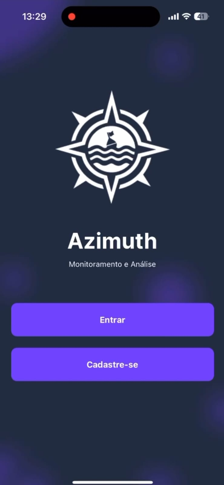
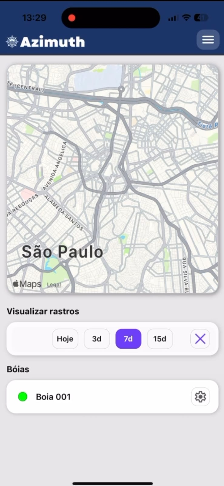
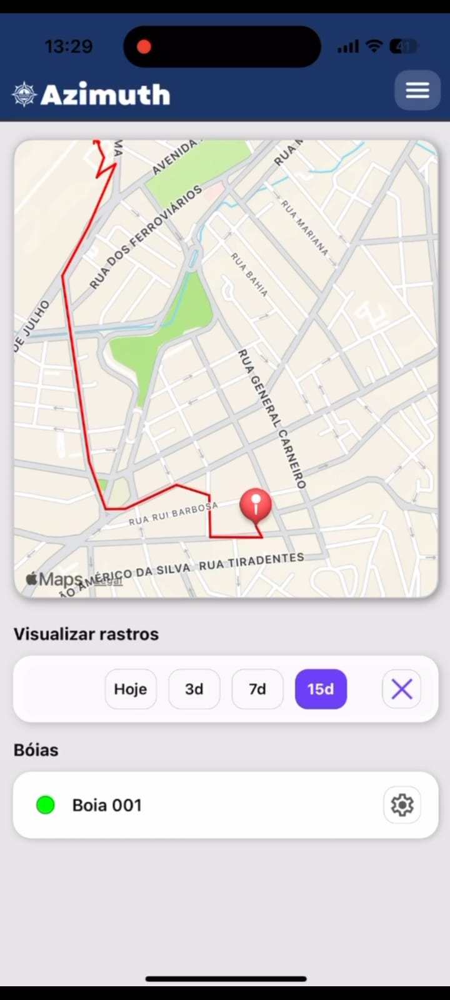
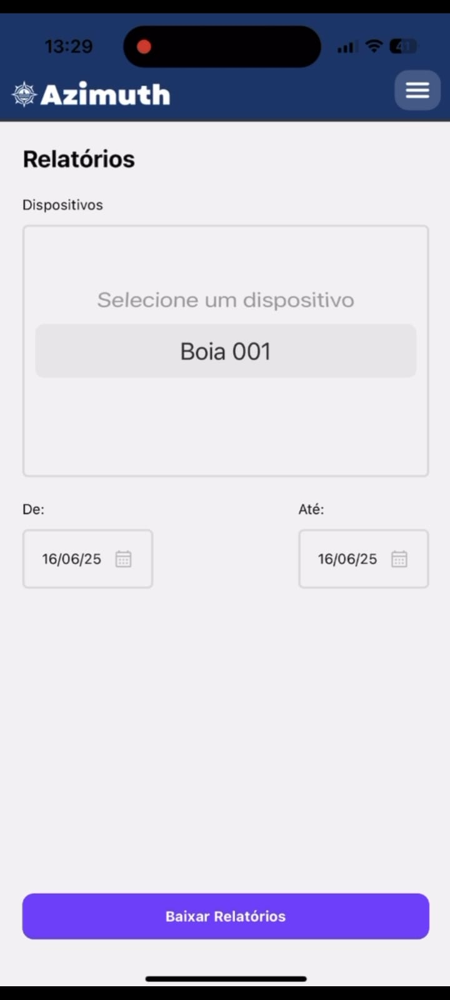

Overview
O projeto Azimuth foi desenvolvido como solução para facilitar o monitoramento geográfico de dispositivos chamados "derivadores", que transmitem sua localização via sensores conectados a placas Arduino. As informações coletadas são transmitidas para um servidor via API GraphQL e armazenadas em banco de dados MongoDB.
Objetivo
Desenvolver um sistema acessível e funcional para coleta, envio, armazenamento e visualização de dados de localização, com interface responsiva e autenticação segura, voltado a usuários que precisam de controle geográfico em tempo real.
Principais Funcionalidades
- Integração com placa Arduino para coleta de coordenadas GPS;
- Visualização de mapas e rotas usando bibliotecas gráficas e interativas;
- Autenticação de usuários com JSON Web Tokens (JWT) e senhas criptografadas (bcryptjs);
- API desenvolvida com GraphQL e Apollo Server;
- Back-end com Express e MongoDB (via Mongoose);
- Front-end responsivo com React Native;
- Arquitetura MSC para organização do projeto;
- Persistência e consulta de dados em tempo real com feedback visual no app.
Stack Tecnológica
- Front-end: React Native com TypeScript e bibliotecas de mapas interativas;
- Back-end: Node.js, Express, Apollo Server, GraphQL;
- Banco de Dados: MongoDB com Mongoose;
- Autenticação: JWT + bcryptjs;
- Controle de Versão: Git e GitHub;
- Arquitetura: MSC (Model - Service - Controller);
- Extras: Integração com sensores e placa Arduino via portas seriais.
Diferenciais do Projeto
- Projeto premiado como o melhor do semestre pela banca avaliadora da faculdade;
- Integração completa entre hardware (Arduino) e software (mobile + servidor);
- Aplicativo leve, funcional e com foco em usabilidade;
- Código modular e reutilizável, com boas práticas de desenvolvimento;
- Documentação clara e estrutura escalável para evolução futura do projeto.




×

Tecnologias Utilizadas
- React Native
- TypeScript
- Node.js
- GraphQL
- Apollo Server
- Express
- MongoDB
- Mongoose
- JWT
- bcryptjs
- Git
- GitHub
- MSC